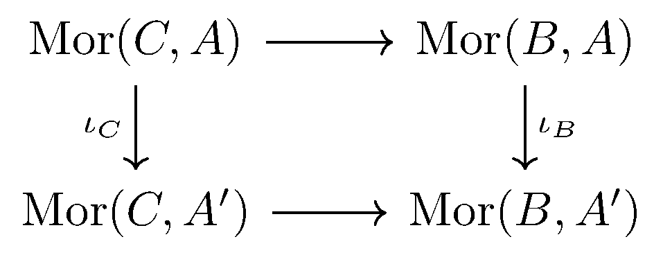
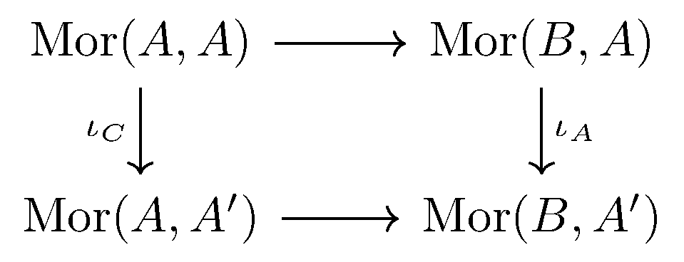
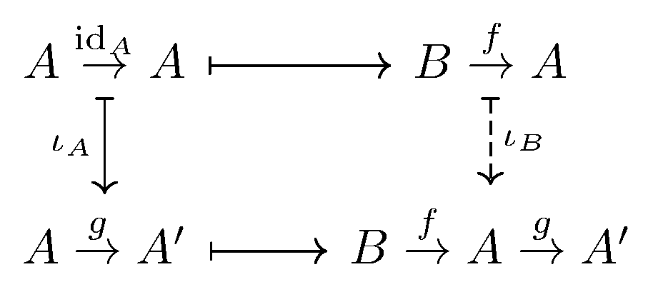
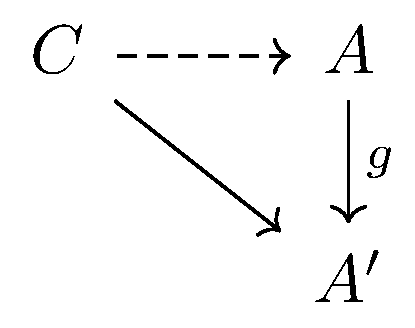
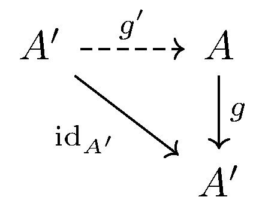
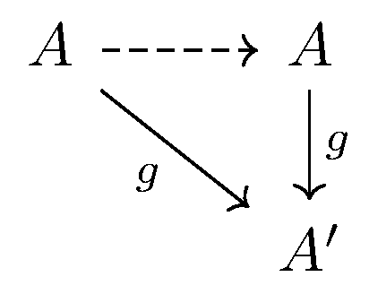

September 22nd
Today I learned about Yoneda's Lemma. The intuition here is that two objects $A$ and $A'$ in a category $\mathcal C$ with "the same'' mappings from the rest of the objects in $\mathcal C$ should be isomorphic. We quantify this by asserting bijective mappings $\iota_C$ for objects $C\in\mathcal C$ which biject\[\op{Mor}(C,A)\stackrel{\iota_C}\longrightarrow\op{Mor}(C,A').\]
Having a one-to-one correspondence of arrows isn't terribly interesting without asserting some structure behind those arrows; namely, all we know is that the number of arrows is the same, which in most categories we care about is probably just countably infinite anyways. So we also introduce a contravariant functor $h_A=\mathcal C\to\op{Sets}$ which maps objects $B\mapsto\op{Mor}(B,A)$ and arrows $B\to C$ to $\op{Mor}(C,A)\to\op{Mor}(B,A)$ by\[B\to C\longmapsto (C\to A)\to(B\to C\to A).\]In words, out map $\op{Mor}(C,A)\to\op{Mor}(B,A)$ takes maps $C\to A$ and takes them to other maps $B\to C\to A,$ using the arrow $B\to C.$ The structure of arrows we're going to guarantee is that the following diagram commutes, for any objects $B$ and $C$ with an implicit mapping $B\to C.$
So we claim now that $A$ and $A'$ are isomorphic. We begin by studying the commutative diagram. We claim that there is a mapping $g:A\to A'$ such that $\iota_C$ just takes maps $C\to A$ to $C\to A\stackrel g\to A'.$ To prove this claim, notice that we can force $\iota_\bullet$ to extract out our $g$ by watching where $\iota_A$ takes $\op{id}_A.$ Namely, fix a mapping $f:B\to A,$ and we know the following diagram commutes.
Now, focusing on $\op{id}_A\in\op{Mor}(A,A),$ the diagram looks like the following.
The top-right is our starting point. The top-left mapping is just our named $f:B\to A$ because the identity does not modify the mapping. We name $g=\iota_A(\op{id}_A),$ as claimed earlier, and when we follow it across the bottom, we see the bottom-right corner is $B\stackrel f\to A\stackrel g\to A'.$ But then focusing on how $\iota_B$ commutes, we see that $\iota_B$ indeed sends $B\stackrel f\to A$ to $B\stackrel f\to A\stackrel g\to A',$ which is what we wanted.
Only now that we've discussed the commutative diagram do we bring in the information that our $\iota_\bullet$ are actually bijections. We claim that $g$ is actually an isomorphism. In light of the above work, the fact $\iota_C$ are all bijections means that for any mapping $C\to A',$ there is a unique mapping $C\to A$ such that $C\to A'=C\to A\stackrel g\to A'.$ In other words, all maps $C\to A'$ factor uniquely through $g,$ or there is a unique induced arrow in the following diagram.
As an intuitive aside, the words "factor uniquely'' suggest that an isomorphism is about to be constructed in the same way that they appeared for the product. Anyways, to finish the proof, fix $C=A'$ and look at $\op{id}_{A'}:A'\to A'.$ In particular, we know there is a unique $g'$ making the following diagram commute.
So we know that $g\circ g'=\op{id}_{A'}.$ For $g$ to be an isomorphism, we need to know that $g'\circ g=\op{id}_A$ as well. This is not extraordinarily hard, for $g\circ g'=\op{id}_{A'}$ implies that\[g\circ(g'\circ g)=(g\circ g')\circ g=\op{id}_{A'}\circ g=g\circ\op{id}_A.\]But this means there are two functions that make the following diagram commute—both $\op{id}_A$ and $g'\circ g.$
It follows that $g'\circ g=\op{id}_A,$ which finishes the proof.